คบเพลิงกิ่งไม้ คบเพลิงกิ่งไม้ | 1 | 60 | ไฟ | หุ่นไล่กาผีสิง 0.25% |
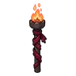 คบเพลิงศักดิ์สิทธิ์ | 1 | 56 | ไม่มีธาตุ | อาวุธเริ่มต้นของสาย (ได้ตอนเปลี่ยนอาชีพ) |
 คบเพลิงกระป๋อง คบเพลิงกระป๋อง | 4 | 62 | ไม่มีธาตุ | ซาลาแมนเดอร์น้ำ 0.25% |
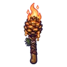 คบเพลิงลูกสน | 7 | 64 | ไม่มีธาตุ | นากนักล่า 0.25% |
 คบเพลิงมาร์ชเมลโล่ คบเพลิงมาร์ชเมลโล่ | 10 | 57 | ไม่มีธาตุ | มันฝรั่งเดินได้ 0.12% |
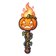 คบเพลิงฟักทองซน | 13 | 57 | วิญญาณ | ฟักทองจอมซน 0.12% |
 คบเพลิงสไลม์น้ำใส คบเพลิงสไลม์น้ำใส | 16 | 55 | น้ำ | นกกระเต็นดำน้ำ 0.06% |
 คบเพลิงปีกแมลงปอ คบเพลิงปีกแมลงปอ | 19 | 55 | ลม | แมลงปอไพลิน 0.06% |
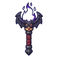 คบเพลิงราชาค้างคาว | 23 | 74 | มืด | ราตรีราชาค้างคาว 0.5% |
 คบเพลิงเหล็กดัด คบเพลิงเหล็กดัด | 26 | 101 | ไม่มีธาตุ | หมาป่าเงาจันทร์ ร่างน้ำค้างแข็ง 0.25% |
 คบเพลิงหิ่งห้อยยักษ์ คบเพลิงหิ่งห้อยยักษ์ | 26 | 90 | ลม | ด้วงหิ่งห้อยยักษ์ ร่างแสงฟ้า 0.24% |
 คบเพลิงเขี้ยวหมาป่า คบเพลิงเขี้ยวหมาป่า | 28 | 98 | ไม่มีธาตุ | มดงาน 0.25% |
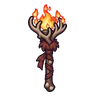 คบเพลิงเขากวางไฟ | 30 | 90 | ไฟ | กวางเขาไฟ ร่างไฟฟ้า 0.24% |
 คบเพลิงภูตไม้เปลวไฟ คบเพลิงภูตไม้เปลวไฟ | 30 | 86 | ไฟ | ภูตไม้เปลวไฟ 0.06% |
 คบเพลิงกระดูกขา คบเพลิงกระดูกขา | 31 | 96 | ไม่มีธาตุ | แกะเมฆจ่าฝูง 0.25% |
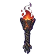 คบเพลิงตอไม้ถ่าน | 33 | 90 | ไฟ | สไลม์ลาวา 0.12% |
 คบเพลิงลมหมุน คบเพลิงลมหมุน | 35 | 90 | ลม | ภูตลมหมุน 0.12% |
 คบเพลิงอีกาส่งสัญญาณ คบเพลิงอีกาส่งสัญญาณ | 36 | 90 | มืด | อีกาส่งสัญญาณ 0.12% |
 คบเพลิงผีดวงไฟ คบเพลิงผีดวงไฟ | 37 | 86 | วิญญาณ | คนงานเหมืองผี 0.06% |
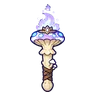 คบเพลิงราชาเห็ดเรืองแสง | 39 | 118 | พิษ | ราชาเห็ดเรืองแสง 0.5% |
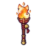 คบเพลิงไฟจิ้งจอก | 41 | 86 | ไฟ | จิ้งจอกถ่านแดง 0.06% |
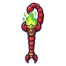 คบเพลิงหางแมงป่อง | 43 | 90 | พิษ | คางคกพองพิษ 0.12% |
 คบเพลิงอินทรีพายุ คบเพลิงอินทรีพายุ | 45 | 86 | ลม | ภูตพายุหิมะ 0.06% |
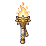 คบเพลิงตะวัน | 47 | 90 | ศักดิ์สิทธิ์ | ก้อนหินลอยแตกตัว 0.12% |
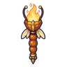 คบเพลิงนางพญามด | 49 | 118 | ดิน | รังนางพญามด 0.5% |
 คบเพลิงหินโกเลม คบเพลิงหินโกเลม | 51 | 138 | ไม่มีธาตุ | คนกรอกแสง 0.25% |
 คบเพลิงทองเหลือง คบเพลิงทองเหลือง | 54 | 134 | ไม่มีธาตุ | ยามกลวง 0.25% |
 คบเพลิงคางคกพิษ คบเพลิงคางคกพิษ | 56 | 123 | พิษ | คางคกพิษ 0.12% |
 คบเพลิงจานกัปปะ คบเพลิงจานกัปปะ | 58 | 123 | น้ำ | หมาป่าหิมะ 0.12% |
 คบเพลิงนกฮูกขาว คบเพลิงนกฮูกขาว | 61 | 123 | ศักดิ์สิทธิ์ | ลูกนกฮูกจ่าฝูง 0.12% |
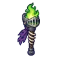 คบเพลิงหมวกอัศวิน | 63 | 123 | ไม่มีธาตุ | หุ่นสปริงระเบิด 0.12% |
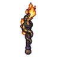 คบเพลิงซาลาแมนเดอร์ | 66 | 118 | ไฟ | อิมป์เปลวไฟ ร่างไฟฟ้า 0.06% |
 คบเพลิงไฟเงา คบเพลิงไฟเงา | 68 | 118 | มืด | อีกาเงา 0.06% |
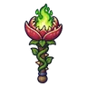 คบเพลิงดอกไม้กินคน | 70 | 118 | ดิน | ไดโนจิ๋วจ่าฝูง 0.06% |
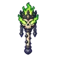 คบเพลิงราชาสุสาน | 73 | 161 | วิญญาณ | บัลลังก์ราชาสุสาน 0.5% |
 คบเพลิงหินลาวา คบเพลิงหินลาวา | 76 | 166 | ไฟ | สไลม์ลาวา 0.25% |
 คบเพลิงด้วงแรด คบเพลิงด้วงแรด | 78 | 171 | ไม่มีธาตุ | ด้ายพันคน 0.25% |
 คบเพลิงไม้โบราณ คบเพลิงไม้โบราณ | 81 | 176 | ไม่มีธาตุ | ใบมีดกระดาษ 0.25% |
 คบเพลิงค้างคาวเปลวไฟ คบเพลิงค้างคาวเปลวไฟ | 83 | 157 | ไฟ | ค้างคาวเปลวไฟ 0.12% |
 คบเพลิงนกกระสาเงา คบเพลิงนกกระสาเงา | 85 | 157 | มืด | ม้าลากเกวียนกลวง 0.12% |
 คบเพลิงภูตแสงม่วง คบเพลิงภูตแสงม่วง | 86 | 171 | วิญญาณ | ภูตแสงม่วง 0.25% |
 คบเพลิงประภาคาร คบเพลิงประภาคาร | 87 | 150 | ศักดิ์สิทธิ์ | หุ่นของคาร์ดินัล 0.06% |
 คบเพลิงไฟน้ำแข็ง คบเพลิงไฟน้ำแข็ง | 90 | 150 | น้ำ | พลีซิโอซอร์ 0.06% |
 คบเพลิงดาวหาง คบเพลิงดาวหาง | 92 | 150 | ไม่มีธาตุ | ผู้จุดตะเกียงรุ่นแรก ร่างทอง 0.06% |
 คบเพลิงไฟม่วงรากดำ คบเพลิงไฟม่วงรากดำ | 94 | 165 | ไฟ | บอสผู้ถูกรากสิง |
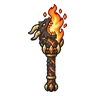 คบเพลิงมังกรลาวา | 95 | 205 | ไฟ | หัวใจมังกรลาวา 0.5% |
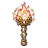 คบเพลิงดวงใจกองไฟ | 99 | 222 | ไฟ | ดรอปทั่วโลก Lv 90+ |